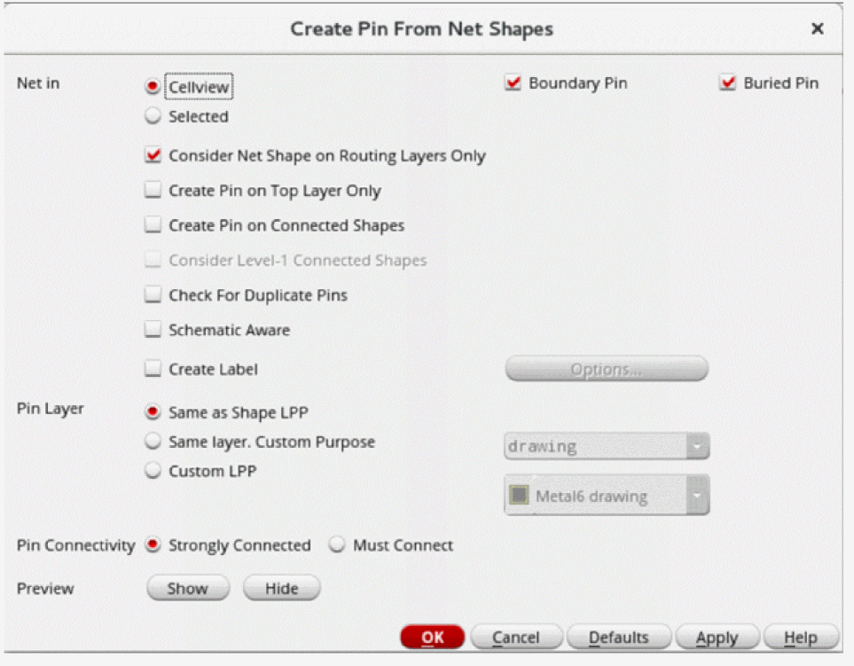

Creating Pins from Net Shapes in the Pin Tool
Use the Create Pin From Net Shapes form to create pins from existing net shapes in the layout cellview. Only top-level pins can be created using this method. The Pin Tool searches for the target net shapes in the current cellview, creates new pins on top of these target net shapes, and assigns connectivity to these new pins.
The Pin Tool does not modify the connectivity of existing nets or pins in the design.
To create pins from net shapes:
- Choose Plan – Pin Planning – Pin Tool. The Pin Browser is displayed.
-
Choose Create – Create Pin From Net Shapes to display the Create Pin From Net Shapes form.
 - In the Net in section, select either CellView or Selected to specify whether net shapes must be searched in all or selected nets in the current cellview.
-
In CellView mode, select the types of pins to be created: Boundary Pin, Buried Pin, or both.
These options are disabled in Selected mode. - Select Consider Net Shape on Routing Layers Only to restrict the search to the net shapes that are located on routing layers.
- Select Create Pin on Top Layer Only to create pins only on the top layer shape.
- Select Create Pin on Connected Shapes to restrict the search to those net shapes that are connected to top-level nets.
- Select Consider Level-1 Connected Shapes to include net shapes that are connected to level-1 nets in the search.
- Select Check for Duplicate Pins to check for existing pins with the same names, and to not create duplicates.
- Select Schematic Aware to ensure that pins are created only for those nets that have corresponding terminals in the schematic view. Pins are not created for internal nets.
- Select Create Label to create labels over pins. Click Options to display the Set Pin Label Text Style form. Use the options in this form to define pin label settings.
- In the Pin Layer section, select one option to specify the LPP on which the pins must be created: Same as Shape LPP, Same Layer, Custom Purpose or Custom LPP.
- In the Pin Connectivity section, set the routing preferences to Strongly Connected or Must Connect.
- In the Preview section, click Show to see a preview of the pins. This is a visual depiction of how the pins would be created; actual pins are not created yet.
- Click Hide to close the preview.
- Click OK to create the pins.
Related Topics
Create Pin From Net Shapes Form
Return to top